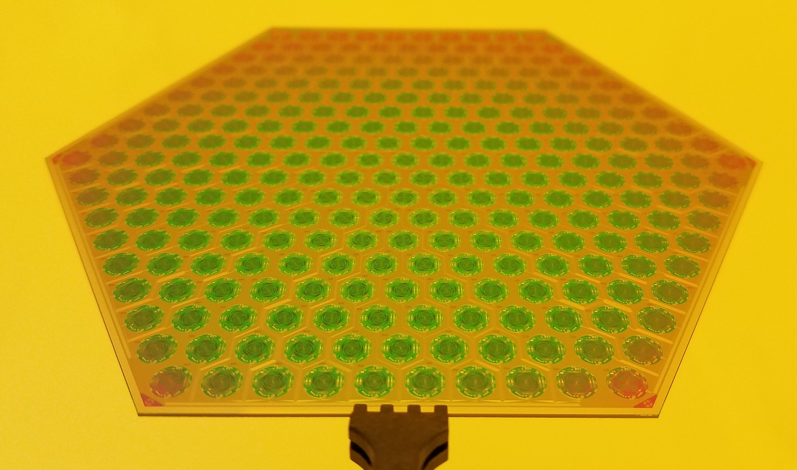
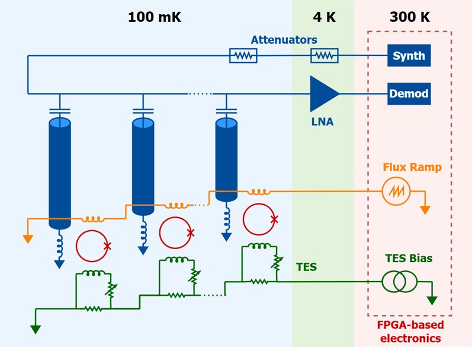
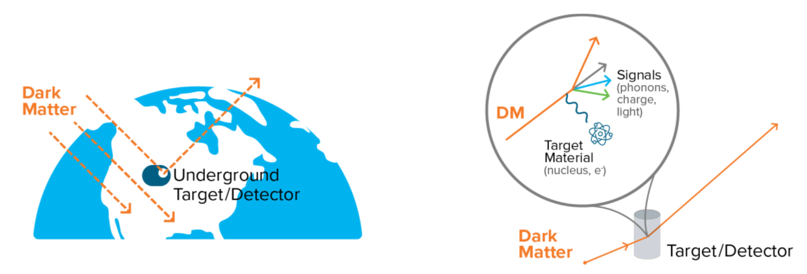
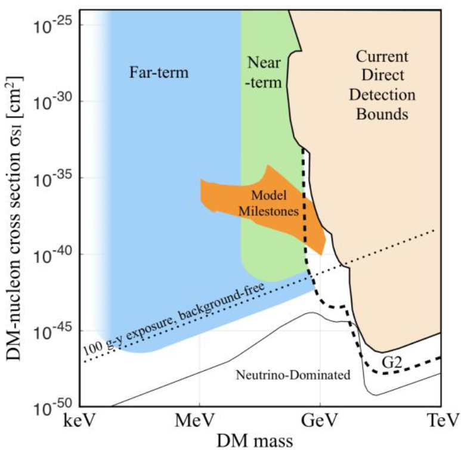

Microwave SQUID Multiplexing
Modern detectors for millimeter-wave cosmological observations have the blessing and the curse of being "background limited," meaning that the noise induced by the sensors and electronics is sub-dominant to the quantum statistics of the photons they are detecting. In this context, there is no such thing as a more sensitive detector - only by increasing the number of simultaneously observing detectors can an observatory become more sensitive. The gold standard for millimeter-wave sensors is the transition-edge sensor (TES) bolometer, which is highly scalable: modern photolithography techniques are able to produce >1,000 devices on a single 150 mm silicon wafer.

Photo: Chris Raum
This scalability has led to an explosive growth in the number of sensors used to simultaneously observe the CMB. But while TES bolometers are very scalable, the situation with their associated readout circuitry components is not as favorable. In order to not limit the overall telescope sensitivity, multiplexing techniques must be employed which reduce the total number of electronics components. This has been a trend for some time; multiplexed readout is a major driver of the achievable detector count in modern millimeter-wave observatories.

The crucial issue at hand is that these TES detectors need to be exremely thermally isolated from their environment in order to cool them to their operating temperature of ~0.1 Kelvin, but they also must be electrically connected to circuitry which interacts with conventional electronics at ~300 Kelvin. Modern telescopes are now able to incorporate ~10,000 sensors inside a single cryovessel; if all these detectors were biased and read out independently, they would require 60,000 wires, 60,000 SQUID amplifiers, 60,000 ADCs, 60,000 feedback circuits, etc. That number of cables and components would be very difficult to manage, cool, and fabricate at scale. The solution is to incorporate a cryogenic channelization scheme that drastically cuts down on the number of independent readout units required.

There are 3 commonly implemented ways of implementing such a channelization scheme: time division multiplexing, digital frequency-division multiplexing, and microwave SQUID multiplexing (often shortened to just μmux). Of those, μmux has by far the highest channel handling capacity owing to the large amount of bandwidth available for readout (GHz as opposed to MHz). Current systems are capable of reading out ~103 sensors with a single readout line. The system which I helped implement, produce, and test for the Simons Observatory and AliCPT is based on a μmux scheme and is depicted schematically below. Individual TES bolometers are coupled to unique microwave resonators via rf-SQUIDs. This coupling causes the detector signal to modulate the resonance frequency of each resonator. A software-defined radio system interrogates the resonators w/ individual microwave probe tones in a transmission measurement to track them over time. Two other "DC" lines are needed to bias the TESs and provide a linearization signal to the SQUIDs.

The resonators and SQUIDs are constructed of thin film superconductors using modern photolithography techniques. Shown on the left is a chip containing the resonators+SQUIDs, and on the right is an assembly that includes all the TESs (bottom wafer in the vertical stack) with only a small number of microwave connections (right connector) and "DC" bias+linearization connections (left connector).


During my postdoctoral work at NIST, I developed a more advanced microwave SQUID multiplexer which increases the number of channels that can be read out from 910 to 1,820 - thereby halving the required number of cables and cryogenic amplifiers. This new development will be used in the AliCPT telescope and is a potential upgrade for the the Simons Observatory. I also measured and studied ways in which multiplexing technology induces a small (~0.1%) cross-coupling between sensor channels. Now that the Simons Observatory is beginning to collect real photons from the CMB, my group is turning its attention to characterizing these systematic effects using the high volume of data being produced by the observatory.
My group is now also looking into broadening the application space for microwave SQUID multiplexing technology. Of particular interest are experiments searching for galactic dark matter via nuclear recoil or electron scattering. As can be seen in the figure below, there is a wide range of unexplored parameter space for masses below the traditional WIMP mass. Interactions from low-mass dark matter particles would deposit much less energy in a target than a WIMP would, requiring very low detection energy thresholds - below those of conventional particle physics detectors based on ionization and photomultipler tubes but within reach of solid-state low-temperature detectors employing TESs. Current projects are employing just a few TESs, but in order to cover the full parameter space will need arrays of at least 1,000 sensors. We are therefore working to adapt microwave SQUID multiplexing technology to be compatible with sub-eV threshold TES-based detectors to open a path towards these envisioned future kilo-sensor experiments.

Detection paradigm and future sensitivity projections from the 2019 Basic Research Needs report.